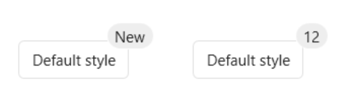

要求
.net>=4.0OS>=win7IDE:vs2019C#:8.0
下载
通过Nuget或者Github下载
Nuget
Nuget上是编译好的发布版本，地址为：HandyControl-Nuget
Github
Github上是最新的源代码，地址为：HandyControl-Github
快速开始
第一步
下载源码或者以Nuget的方式引用控件库。
第二步
在App.xaml中添加以下代码:
<Application.Resources>
<ResourceDictionary>
<ResourceDictionary.MergedDictionaries>
<ResourceDictionary Source="pack://application:,,,/HandyControl;component/Themes/SkinDefault.xaml"/>
<ResourceDictionary Source="pack://application:,,,/HandyControl;component/Themes/Theme.xaml"/>
</ResourceDictionary.MergedDictionaries>
</ResourceDictionary>
</Application.Resources>
第三步
添加命名空间：xmlns:hc="https://handyorg.github.io/handycontrol"
示例
<hc:Badge Value="12" Text="New" BadgeMargin="0,-14,-20,0" Height="30">
<Button Content="默认样式"/>
</hc:Badge>
<hc:Badge Value="12" BadgeMargin="0,-14,-20,0" Height="30">
<Button Content="默认样式"/>
</hc:Badge>
效果
